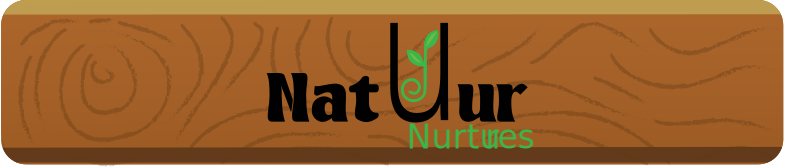
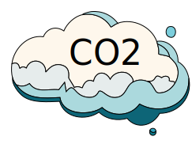

Voordelen

Het planten van bomen draagt bij aan het behoud van het milieu, ondersteunt diverse levensvormen en draagt bij aan het welzijn van de planeet. Het is een duurzame praktijk die wereldwijd wordt aangemoedigd om de negatieve effecten van ontbossing en klimaatverandering tegen te gaan.
Koolstofopslag:
Bomen spelen een cruciale rol bij het verminderen van koolstofdioxide in de atmosfeer. Ze absorberen CO2 tijdens fotosynthese en slaan koolstof op, waardoor ze fungeren als koolstofputten. Dit helpt de opwarming van de aarde tegen te gaan en klimaatverandering te verminderen.
Luchtkwaliteit:
Bomen absorberen niet alleen CO2, maar ook andere verontreinigende stoffen zoals zwaveldioxide, stikstofoxiden en fijnstof. Ze dragen dus bij aan het verbeteren van de luchtkwaliteit en het verminderen van luchtverontreiniging.